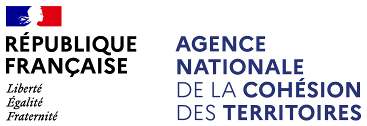

Coopérations entre métropoles et territoires environnants
Filtrer les coopérations :
Rechercher une coopération par son nom :
Liste des coopérations :
Territoire
Liste des coopérations dans lequel ce territoire est impliqué :
 Retour
RetourCoopération
Objectifs de la coopération
Thématiques
Modalité
Documents ressources
liste des territoires impliqués dans la coopération
RetourBienvenue sur la carte interactive des coopérations entre les métropoles et leurs territoires environnants proposée par l’Agence nationale de la cohésion des territoires, en lien avec l’Assemblée des Communautés de France et France urbaine.
proposée par l’Agence nationale de la cohésion des territoires, en lien avec l’Assemblée des Communautés de France et France urbaine.
Cette carte vous permet de visualiser XXX coopérations, et de connaître leurs objectifs, leurs modalités, les thématiques investies et les territoires impliqués.
Vous pouvez rechercher une coopération depuis la page d'accueil du menu latéral, et filtrer les coopérations en fonction de leurs thématiques (ex: mobilité, environnement, GEMAPI...) et de leur modalité (ex: contrat de réciprocité, GIP, pôle métropolitain...).
Cette carte valorise les travaux sur les coopérations entre les métropoles et leurs territoires environnants conduits en 2018 et 2019 par le CGET (ANCT depuis le 1er janvier 2020), France urbaine et l’AdCF.
Le recensement des coopérations entre métropoles et territoires environnants a été réalisé en 2018. Compte tenu de l’extension alors récente de son périmètre, entrainant de fait l’« internalisation » de ses coopérations anciennes, il a été convenu avec la métropole Aix-Marseille-Provence qu’elle ne participait pas au recensement.Sources des données : ANCT, Direction des stratégies territoriales, bureau de la prospective et des études, 2019 • Réalisation : ANCT pôle ADT, service cartographie
